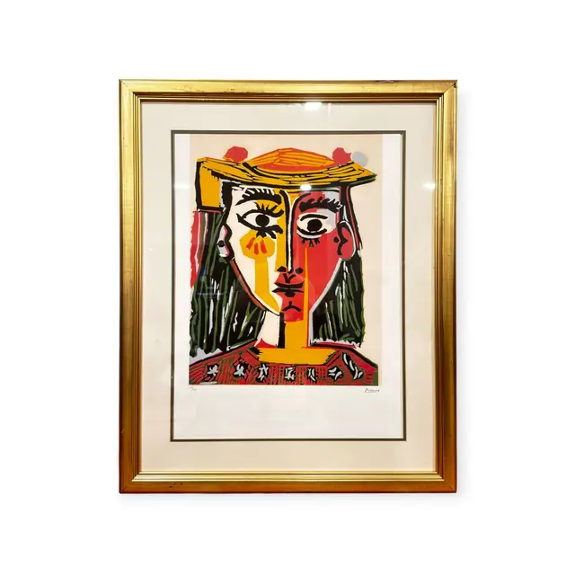
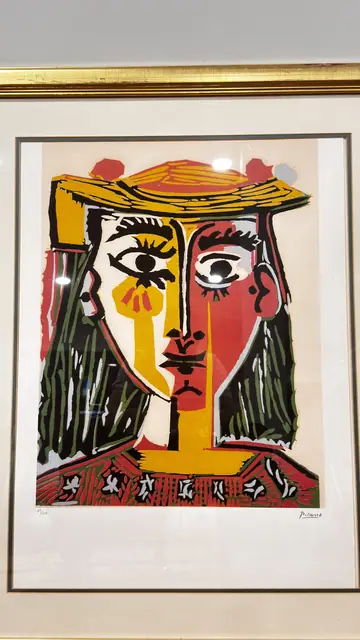

Paintings & Prints
Picasso Bust of a Woman in Hat Print, Signed, Framed
Pablo Picasso · late 20th to early 21st century reproduction of a 1960s image
Price Upon Request


About the Item
Picasso. A bold graphic head-and-shoulders portrait built from flat, poster-like colour areas with heavy black contour drawing, in the manner of Picasso's late linocuts. The face is divided vertically, one half yellow and one half red, framed by dark green hair and topped by a wide ochre-yellow hat with red accents. Below, a red and white patterned bodice band closes the composition. The sheet has a generous white margin and is set behind a cream mat with a fine dark line, in a gold moulded frame under glass. Medium: colour offset lithograph after a linocut. Signed lower right, in the sheet margin, reading "Picasso". Inscribed on the reverse or mount: Picasso (pencil, lower right margin). Condition: Heavy glass glare across the upper sheet in the photograph; no tears, foxing or losses visible.
Details
- Creator:
- Pablo Picasso
- Creation Year:
- late 20th to early 21st century reproduction of a 1960s image
- Medium:
- colour offset lithograph after a linocut
- Period:
- 20Th
- Condition:
- Offered in the condition shown in the photographs.
- Reference Number:
- VO-258
- Documentation:
- No certificate photographed with this listing.
- Gallery Location:
- Picasso (pencil, lower right margin)